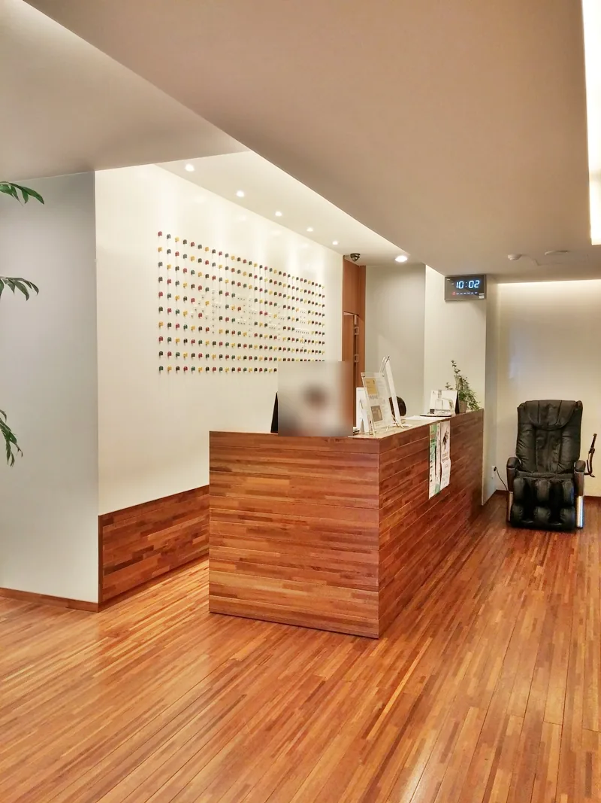
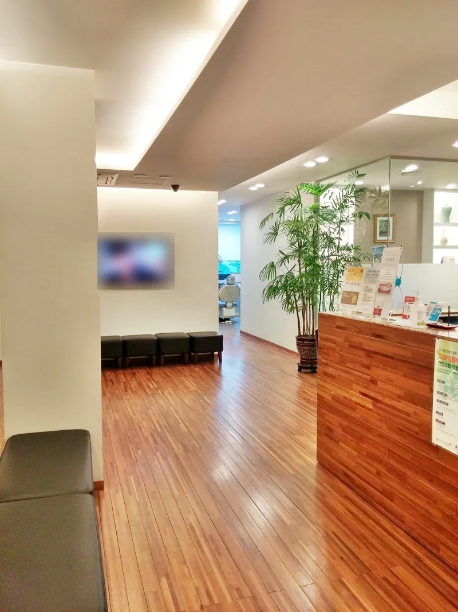
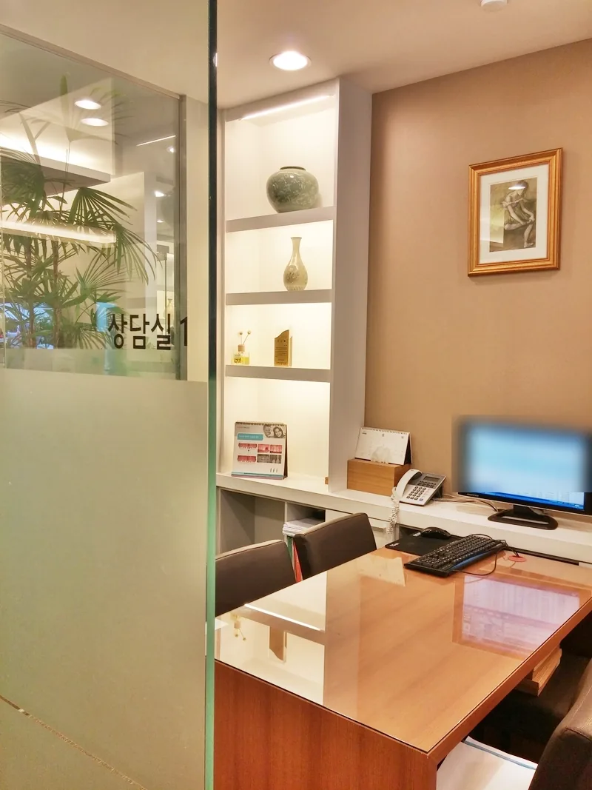
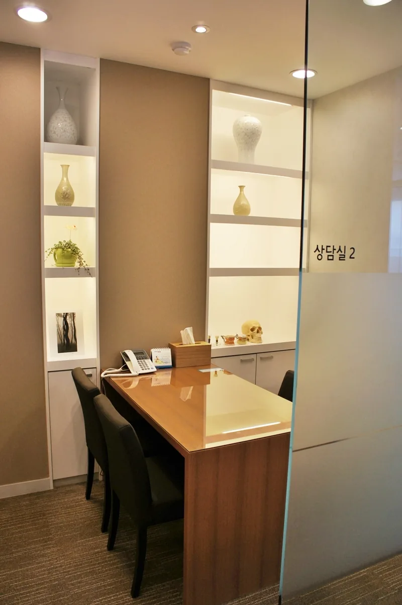
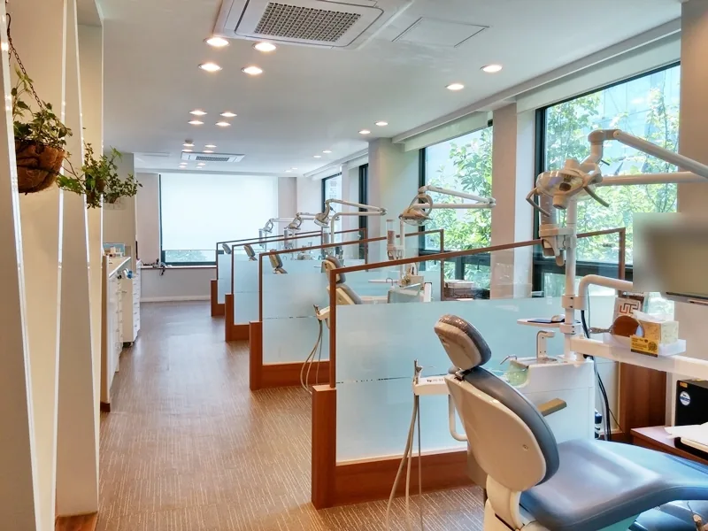
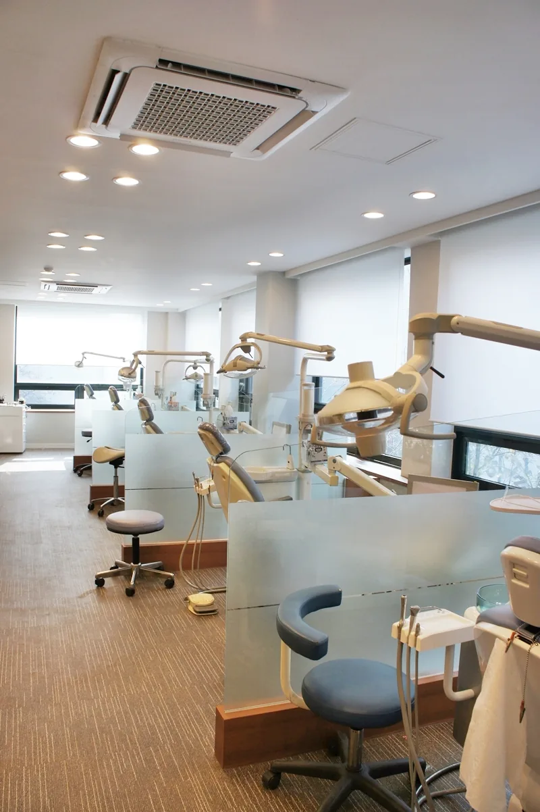
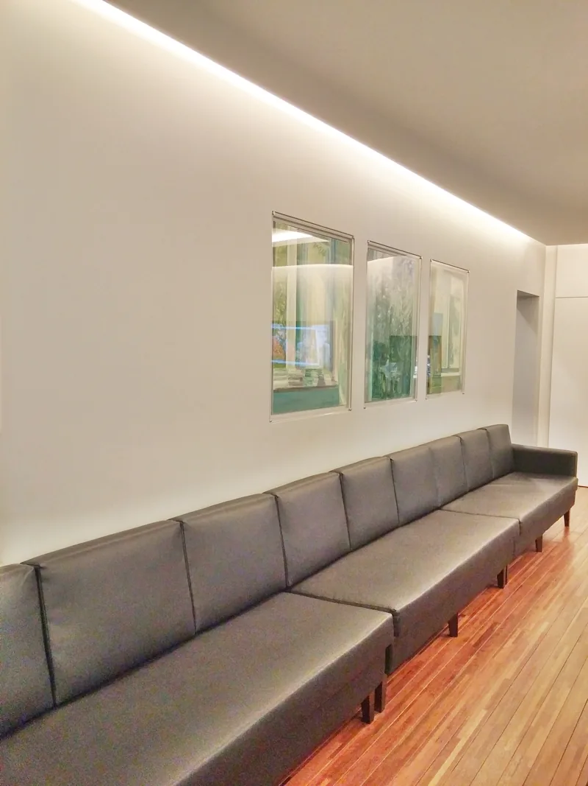
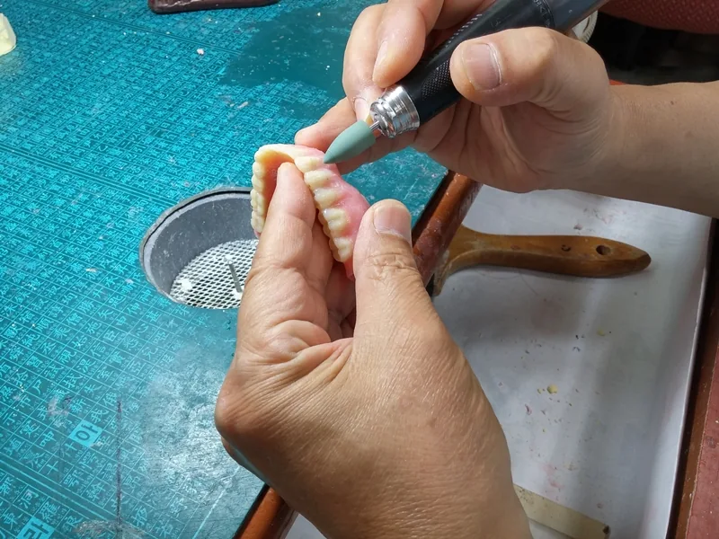
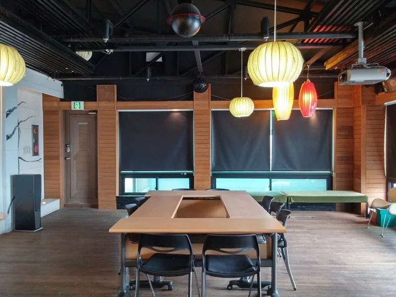
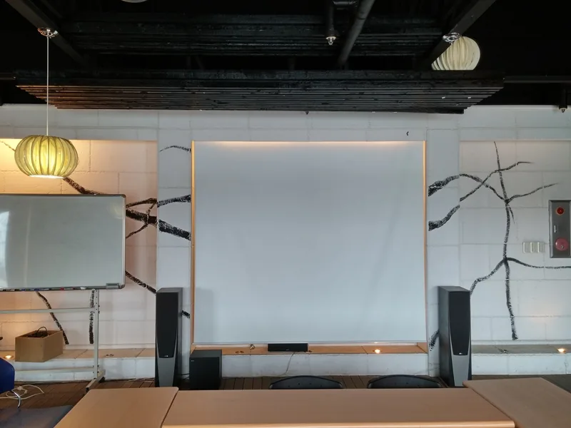

둘러보기
안중사과나무치과는 한 건물 2층부터 5층까지 씁니다. 2층은 임플란트·심미보철·치주, 3층은 교정·심미보철·소아·미백을 진료하고, 4층에는 보철물을 만드는 자체 기공실, 5층에는 교육과 모임에 쓰는 Apple Cafe가 있습니다.
기존 홈페이지 2026년 11월 내용 기준
2층 — 임플란트 · 심미보철 · 치주
임플란트 수술 전 촬영과 수술, 수술 뒤 쉬는 시간이 한 층에서 이어집니다.
이 층접수대 · 대기실 · 상담실 · 진료실 · CT실 · 수술실 두 곳 · 회복실

2층 접수대 — 나무 접수대 뒤로 작은 점으로 꾸민 벽 
2층 대기실 — 벽걸이 TV 아래 긴 의자 
2층 상담실 1 — 유리문 안 책상과 모니터 
2층 상담실 2 — 책상과 치아 모형이 놓인 선반 
2층 진료실 — 창가를 따라 유리 칸막이로 나뉜 진료 의자 
2층 진료실 — 칸막이 사이 진료 의자와 의자 옆 장비 
2층 대기 공간 — 벽을 따라 놓인 긴 의자

4층 기공실 — 기공사가 틀니를 손에 들고 다듬고 있다
5층 — Apple Cafe확인 중
병원 식구들이 교육과 모임에 쓰는 공간입니다. 지역 주민 이용은 경영지원실(031-683-7575)로 문의해 주세요.
이 층교육·모임 공간

5층 Apple Cafe — 큰 탁자와 의자 
5층 Apple Cafe — 화이트보드와 스피커가 있는 앞쪽 벽